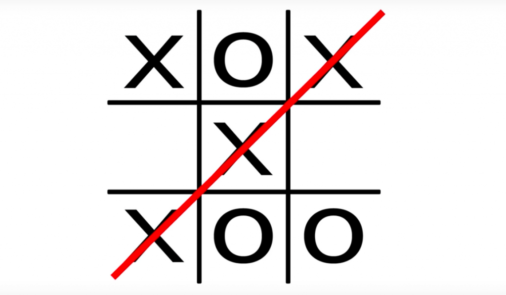

Academy
Software Development - Eerste Jaar
Ik ben momenteel bezig met het eerste jaar van mijn opleiding in Software Development op het ROC Mondriaan Brasserskade. Tot nu toe heb ik veel ervaring opgedaan met HTML, CSS en JavaScript. Ik ben trots op de vooruitgang die ik heb geboekt en ben me momenteel aan het verdiepen in de basisprincipes van PHP.
Projects
Hoger of Lager
Dit project, mijn allereerste game, heb ik in 10 weken ontwikkeld met HTML, CSS en
JavaScript. Ik ben trots op het feit dat ik de logica van de game met JavaScript heb kunnen implementeren.
De visuele elementen en styling zijn gemaakt met CSS, wat de game aantrekkelijk maakt. Het project was een
waardevolle ervaring die mijn vaardigheden aanzienlijk heeft verbeterd.
Als u het zou kunnen spelen via de link
Hoger Lager Game

Tic Tac Toe
Deze game, mijn tweede zelfgemaakte project, ontwikkeld met HTML, CSS en JavaScript. Ik
ben trots op het feit dat ik de spelmechanica volledig in JavaScript heb kunnen implementeren. De visuele
elementen en de styling zijn opgebouwd met CSS, waardoor de game er visueel aantrekkelijk uitziet. Dit
project was een waardevolle leerervaring die mijn vaardigheden op verschillende vlakken aanzienlijk heeft
verbeterd.
Als u het zou kunnen spelen via de link
Tic Tac
Toe
